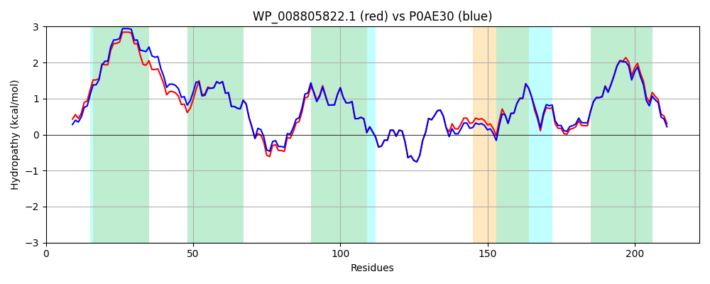

Hit Accession: P0AE30
Hit TCID: 3.A.1.3.3
Hit Description: gnl|BL_ORD_ID|8769 gnl|TC-DB|P0AE30|3.A.1.3.3 Arginine transport system permease protein artM - Escherichia coli.
Mach Len: 222
e:0.000000
Query TMS Count : 5
Hit TMS Count: 5
TMS-Overlap Score: 4.700000
Predicted Substrates:CHEBI:2643;arginine
BLAST Alignment:
Score: 1056 , Bit scores: 411 bits, E-value: 2.4e-148, Alignment length: 222, Percentage identity: 92
Query: 1 MLDYLPELLKGLHTSLTLTVASIIVALILSLIFTIILTLKTPGLVWIVRGYITLFTGTPLLVQIFLIYYGPGQFPSLQDYPWLWHLISEPWLCALIALSLNSAAYTTQLFYGAIRAIPDGQWQSCSALGMSKKDTLAILLPYAFKRALSSYSNEVVLVFKSTSLAYTITLMEVMGHGQLLYGRTYDVMVFGAAGIIYLIVNGLLTLLMRLVERKALAFERRN 222
M +YLPEL+KGLHTSLTLTVAS+IVALIL+LIFTIILTLKTP LVW+VRGYITLFTGTPLLVQIFLIYYGPGQFP+LQ+YP LWHL+SEPWLCALIALSLNSAAYTTQLFYGAIRAIP+GQWQSCSALGMSKKDTLAILLPYAFKR+LSSYSNEVVLVFKSTSLAYTITLMEVMG+ QLLYGRTYDVMVFGAAGIIYL+VNGLLTL+MRL+ERKALAFERRN
Sbjct: 1 MFEYLPELMKGLHTSLTLTVASLIVALILALIFTIILTLKTPVLVWLVRGYITLFTGTPLLVQIFLIYYGPGQFPTLQEYPALWHLLSEPWLCALIALSLNSAAYTTQLFYGAIRAIPEGQWQSCSALGMSKKDTLAILLPYAFKRSLSSYSNEVVLVFKSTSLAYTITLMEVMGYSQLLYGRTYDVMVFGAAGIIYLVVNGLLTLMMRLIERKALAFERRN 222 | Protein Hydropathy Plots: |
|---|
 |  |
Pairwise Alignment-Hydropathy Plot:
|
|---|
|  |